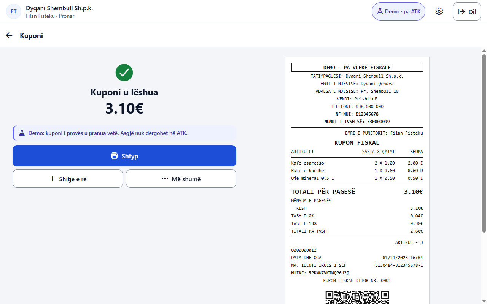
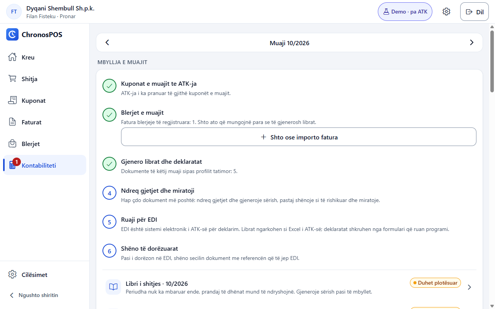
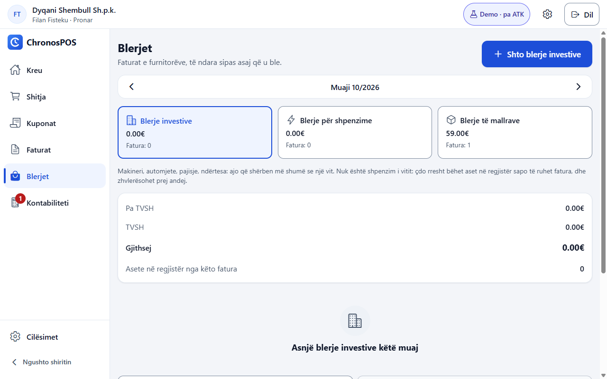
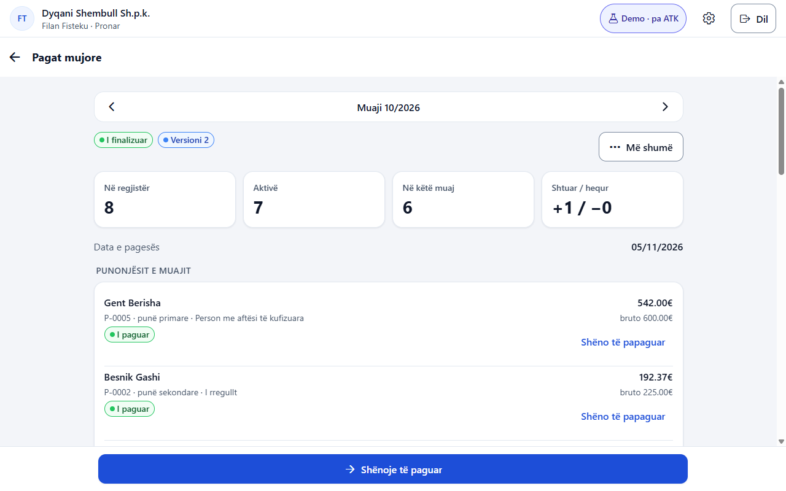
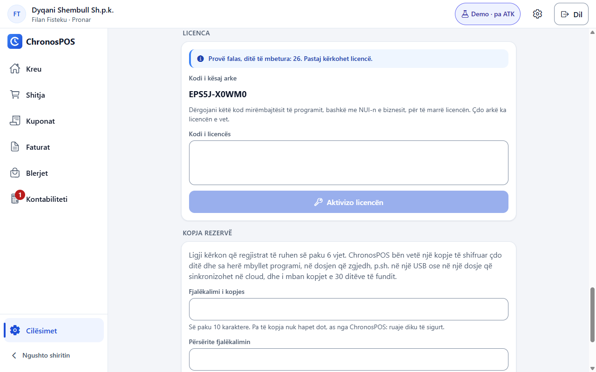

Softuer për pikën e shitjes, i ndërtuar për fiskalizimin në Kosovë. Shit në banak, pastaj mbylle muajin nga i njëjti vend: librat, deklaratat, blerjet dhe pagat.
Ende i pacertifikuar. Chronos POS ende nuk është certifikuar nga Administrata Tatimore e Kosovës, prandaj nuk duhet të përdoret për të lëshuar kuponë fiskalë për shitje reale. Demo nuk lëshon asnjë të tillë: asgjë nuk i shkon ATK-së, dhe çdo kupon që shtyp shënohet pa vlerë fiskale.
Filmi
Chronos POS në njëzet sekonda.
Nga shitja te kuponi fiskal me kodin QR, e deri te librat dhe deklaratat.
Kërko sipas emrit ose barkodit, prek artikullin, zgjidh si u pagua. Më të shiturat janë një prekje larg, dhe në Windows arka punohet edhe me tastierë.
Zbritje dhe pagesë e ndarë
Zbritje për një artikull ose për gjithë shportën, dhe një shitje e paguar bashkë me kesh, kartelë e vauçer, me kusurin të llogaritur.
Sasitë siç i mat ti
Kilogramë e gramë, litra e mililitra, orë e minuta, secila në njësinë e artikullit.
Kuponi fiskal
Sipas mostrave të ATK-së
I nënshkruar, me kodin QR dhe numrat e tij. Shtypet në rrotull 58 dhe 80 mm, gjithmonë në shqip, dhe shtypja e dytë shënohet si kopje.
Kthimet dhe anulimet
Asgjë nuk ndryshohet e nuk fshihet. Gabimi korrigjohet me kupon të ri që i referohet të parit, dhe kuponët nga blloku mund të regjistrohen më vonë.
I ndërtuar të shesë pa internet
Kuponët lëshohen dhe shënohen offline, pastaj dërgohen vetë dhe me radhë kur të kthehet lidhja. Ligji lejon 48 orë, dhe programi paralajmëron ndërsa kalojnë.
Librat
Librat dhe deklaratat
Librat e shitjes dhe të blerjes, dhe formularët TV, QS, QL, WM, CM, WR e CD si ata të ATK-së, me kujtesë para çdo afati. Ti i kontrollon dhe i dorëzon në EDI.
Blerjet sipas llojit
Investime, shpenzime dhe mallra, rresht për rresht. Mallrat hyjnë në stok, investimet në regjistrin e aseteve, dhe shpenzimet në kutinë e duhur të formularit CD.
Pagat
Punonjësit, paga e muajit dhe fletëpagesat në Excel, që ushqejnë WM dhe CM. Shkruaj pagën neto nëse atë e di, dhe bruto llogaritet vetë.
Fatura për bizneset
Fatura me nota krediti dhe debiti, në A4 ose në rrotull 80 mm, me ose pa numër TVSH, dhe regjistër klientësh.
Stoku dhe asetet
Kostot, pranimet dhe numërimet, lista e stokut në Excel, dhe regjistri i aseteve me zhvlerësim për librat dhe për tatim.
Norma e TVSH-së
Lista e ligjit për çfarë ka 8% kudo ku zgjidhet norma, dhe një rekomandim kur një emër, si fatura e rrymës, duket në të. Normën nuk e ndryshon kurrë vetë.
Kontrolli dhe siguria
Kush çfarë mund të bëjë
Pronar, kontabilist dhe arkëtar, secili me PIN-in dhe lejet e veta. Arka e lënë pa përdorim e nxjerr vetë operatorin, dhe çdo veprim regjistrohet.
Kontrollet e brendshme
Njëmbëdhjetë rregulla ngrenë alarme për anulime, zbritje, stok dhe ndërprerje në shitje, me raport mujor.
Të dhënat mbeten te ti
Regjistrat shifrohen në kompjuterin tënd, dhe asnjë server i yni nuk i mban. Kopja rezervë bëhet çdo ditë dhe në mbyllje, në dosjen që zgjedh, me fjalëkalimin tënd.
Programi
Çfarë do të shohësh.
Shitja: kërko, prek dhe paguaj.

Kuponi, i shënuar si demo. Në kuponin real ai rresht s’është.

Mbyllja e muajit, hap pas hapi.

Blerjet, të ndara në investime, shpenzime dhe mallra.

Pagat e muajit, nga drafti te pagesa.

Licenca: kodi i arkës dhe fusha për kodin tënd.
Pamje nga programi për Windows, në mjedisin Demo. Biznesi, emrat dhe shifrat janë të dhëna prove.
Si përdoret
Nga instalimi te mbyllja e muajit.
Instaloje
Shkarko instaluesin dhe hape. Windows-i mund të paralajmërojë, sepse ende s’është i nënshkruar: zgjidh More info, pastaj Run anyway.
Konfiguroje një herë
Pronari përgjigjet një herë: gjuha, biznesi, tatimet, arka dhe PIN-i i vet. Fillon në Demo, ku asgjë nuk i shkon ATK-së.
Shto artikujt
Emri, çmimi me TVSH, norma e TVSH-së, njësia dhe kategoria nga tabelat e ATK-së. Programi të tregon ku ligji jep 8%.
Shit
Hyr me PIN, prek artikujt, shtyp Paguaj dhe lësho kuponin. Në arkën e certifikuar ai i shkon së pari ATK-së dhe shtypet pas kësaj.
Mbylle ditën
Raporti i ditës tregon shitjet sipas pagesës dhe normës së TVSH-së. Mbylle turnin dhe shiko që çdo kupon është raportuar.
Mbylle muajin
Kontabiliteti të çon në gjashtë hapa: kuponët e dërguar, blerjet e regjistruara, gjenerimi, ndreqja dhe miratimi, ruajtja për EDI, shënimi i dorëzuar.
Licenca
Një licencë për çdo arkë.
Licencat do të lëshohen pasi Chronos POS të certifikohet. Ja si do të funksionojnë.
Provoje së pari
Demo dhe Testimi punojnë 30 ditë në një kompjuter pa licencë. Produksioni e kërkon që nga kuponi i parë.
Si e merr arka
Pronari dërgon kodin e arkës dhe NUI-n e biznesit, që të dyja te Cilësimet, Konfigurimi, Licenca, dhe aty e ngjit kodin që merr. Asnjë server i yni nuk përfshihet.
Për sa kohë
Një muaj, gjashtë muaj ose një vit. Vazhdimi nis nga skadimi i vjetër, që asnjë ditë të mos fitohet e të mos humbet.
Një kompjuter i ri
Llogaritet arkë e re dhe merr kod të ri. Regjistrat kthehen me kopjen tënde rezervë.
Kur skadon
Pronari njoftohet 30 ditë para dhe të gjithë 7 ditë para. Gjithçka punon edhe 15 ditë, ose 7 te licenca një ose dy mujore. Pastaj ndalen shitjet, faturat dhe regjistrimet e reja.
Çfarë nuk ndalet kurrë
Dërgimi i kuponëve në pritje, kthimet, anulimet dhe notat e kreditit, historiku dhe ribotimi, raportet, librat dhe deklaratat, eksportet dhe kopjet rezervë. Asgjë nuk fshihet.
Çmimet
Çmimet e lansimit për vitin e parë.
Licencat dalin në shitje pasi Chronos POS të certifikohet. Deri atëherë, demo 30-ditore është falas. Çmimet janë pa TVSH, sepse shitësi nuk është i regjistruar për TVSH.
Konfigurimi i parë në 5 hapa (gjuha, biznesi, tatimet, arka, pronari)
✓
✓
✓
Hyrja me PIN, bllokimi pas PIN-eve të gabuar, ndërrimi i PIN-it
✓
✓
✓
Rolet pronar / arkëtar / kontabilist dhe 8 leje për çdo operator
✓
✓
✓
Dalja automatike pas mosveprimit
✓
✓
✓
Baza e enkriptuar, çelësi i mbrojtur, gjurmët e veprimeve
✓
✓
✓
Kopja rezervë e enkriptuar (ditore dhe në mbyllje) dhe rikthimi
✓
✓
✓
Katër gjuhë: shqip, anglisht, serbisht, turqisht
✓
✓
✓
Arka dhe kuponi fiskal
Artikujt me çmim, normë TVSH-je, njësi dhe kategori ATK, barkod
✓
✓
✓
Shitja me kërkim, filtra, të shiturat më shumë, shporta
✓
✓
✓
Zbritjet në rresht dhe në total
✓
✓
✓
Pagesa me kesh, kartelë, vauçer dhe disa mënyra njëherësh
✓
✓
✓
Kuponi fiskal sipas Shtojcës F: QR, NUIKF, dërgimi te ATK-ja para shtypjes
✓
✓
✓
Kthimet e pjesshme/të plota dhe anulimet me arsye
✓
✓
✓
Rishtypja "KOPJE E KUPONIT" dhe PDF i kuponit
✓
✓
✓
Puna pa internet (OFFLINE) me dërgim vetë dhe paralajmërime 24/48 orë
✓
✓
✓
Kuponat nga blloku pas prishjes
✓
✓
✓
Turni: hapja, përmbledhja, mbyllja
✓
✓
✓
Raporti ditor, kontrolli i integritetit, eksportet CSV
✓
✓
✓
Faturat
Regjistri i klientëve (Kosovë, jashtë, organizata ndërkombëtare)
✓
✓
✓
Faturat me numër rendor, me ose pa TVSH
✓
✓
✓
Notat e kreditit dhe të debitit
✓
✓
✓
Shtypja A4 / 80 mm dhe PDF
✓
✓
✓
Paralajmërimi për afatin e faturës (neni 44.4)
✓
✓
✓
Blerjet, stoku dhe librat
Blerjet rresht për rresht
–
✓
✓
Stoku: kosto, hyrje, numërim, lista në Excel
–
✓
✓
Librat e shitjes dhe blerjes si EDI
–
✓
✓
Skedari zyrtar Excel për librat e TVSH-së
–
✓
✓
Afatet dhe kujtesat e deklaratave
–
✓
✓
Kontabiliteti dhe tatimet
Formularët TV, QS, QL, CD (PDF dhe Excel)
–
–
✓
WM, CM, WR me listat Excel
–
–
✓
Mbyllja e muajit në 6 hapa, validimi dhe versionet
–
–
✓
Tatimet e biznesit dhe pragjet vjetore (TVSH, të ardhurat reale)
–
–
✓
Pagat: punonjësit, paga neto, rregullat, fletëpagesat në Excel
–
–
✓
Tatimi në burim dhe tabelat e CD-së
–
–
✓
Regjistri i aseteve: zhvlerësimi në libra dhe tatimor, shitja, çregjistrimi
–
–
✓
Kontrolli i brendshëm me 11 rregulla dhe raport PDF
–
–
✓
Numri i funksioneve
23
28
36
Çmimi i lansimit në muaj
€9
€15
€25
Shtesat
Instalimi dhe regjistrimi në ATK
€40një herë për arkë
Falas me licencë vjetore në vitin e parë.
Arka e dytë e të njëjtit biznes
€5në muaj në vitin e parë
Në çdo paketë. Më vonë, 50% e çmimit të paketës.
Chronos Pro me shërbimin e deklaratave
€60në muaj në vitin e parë
Më vonë €80 deri €150 në muaj, sipas madhësisë së biznesit.
Çmimet e lansimit vlejnë 12 muaj nga data e licencës; pastaj vlejnë çmimet e rregullta, që shihen të vijëzuara më lart. Klientët që blejnë në 6 muajt e parë pasi licencat të dalin në shitje e mbajnë çmimin e lansimit edhe në rinovimin e parë, si klientë themelues.
Ke pyetje, ose e do një licencë?
Na telefono ose na shkruaj. Licencat lëshohen pasi Chronos POS të certifikohet.
Një kompjuter me Windows dhe, për kuponin, një printer.
Windows 64-bit
I provuar në Windows 11. Android-i dhe iOS vijnë së shpejti dhe ende s’janë në dispozicion.
Internet
Për t’i raportuar kuponët te ATK-ja. Pa të vazhdon të shesë, brenda 48 orëve që lejon ligji.
Një printer
Printer termik për rrotull 58 ose 80 mm me drajver Windows-i. Faturat shtypen edhe në A4, dhe kuponët ruhen edhe si PDF.
Jo për çdo biznes
Pompat e karburantit dhe taksitë kërkojnë pajisje të certifikuara, që ai nuk i mbështet.
Pyetje
Çfarë pyesin njerëzit së pari.
A është i certifikuar Chronos POS?
Jo ende. Së pari duhet të kalojë aplikimin te Administrata Tatimore e Kosovës, me testim kundrejt shërbimit të saj. Deri atëherë nuk duhet të përdoret për shitje reale.
Çfarë mund të bëj me demon?
Ta provosh gjithçka me të dhëna prove për 30 ditë: shitjet, kuponët, librat dhe pagat. Asgjë nuk i shkon ATK-së dhe asnjë kupon s’ka vlerë fiskale.
Ku ruhen të dhënat e mia?
Në kompjuterin tënd, të shifruara. Kopjet rezervë shkojnë në dosjen që zgjedh, me fjalëkalimin tënd. Ne nuk mbajmë asgjë prej tyre.
A i dorëzon vetë deklaratat?
Jo. Ai i përgatit, ti i kontrollon dhe i dorëzon në EDI me llogarinë tënde. E vetmja gjë që programi i dërgon ATK-së është kuponi fiskal.
Çfarë ndodh nëse më prishet kompjuteri?
Instalo programin në kompjuterin e ri dhe rikthe aty kopjen rezervë. Kompjuteri i ri llogaritet arkë e re, prandaj i duhet kod i ri licence.
Çfarë ndodh nëse nuk e vazhdoj?
Pas ditëve shtesë ndalen shitjet e reja, por regjistrat mbeten të tutë: mund t’i lexosh, t’i raportosh, t’i eksportosh dhe t’i ruash në kopje rezervë.
A mund ta ndërroj paketën më vonë?
Po. Merr një kod të ri për të njëjtin afat dhe e ngjit në program. Të dhënat mbeten ku janë. Çka ke regjistruar në një pjesë që paketa e re nuk e përfshin mund ta lexosh dhe ta ruash, por jo ta ndryshosh.
A janë çmimet me TVSH?
Jo. Çmimet janë pa TVSH, sepse shitësi nuk është i regjistruar për TVSH.
Provoje në kompjuterin tënd.
Demo nuk kërkon licencë, dhe asgjë që shkruan nuk del nga kompjuteri yt.